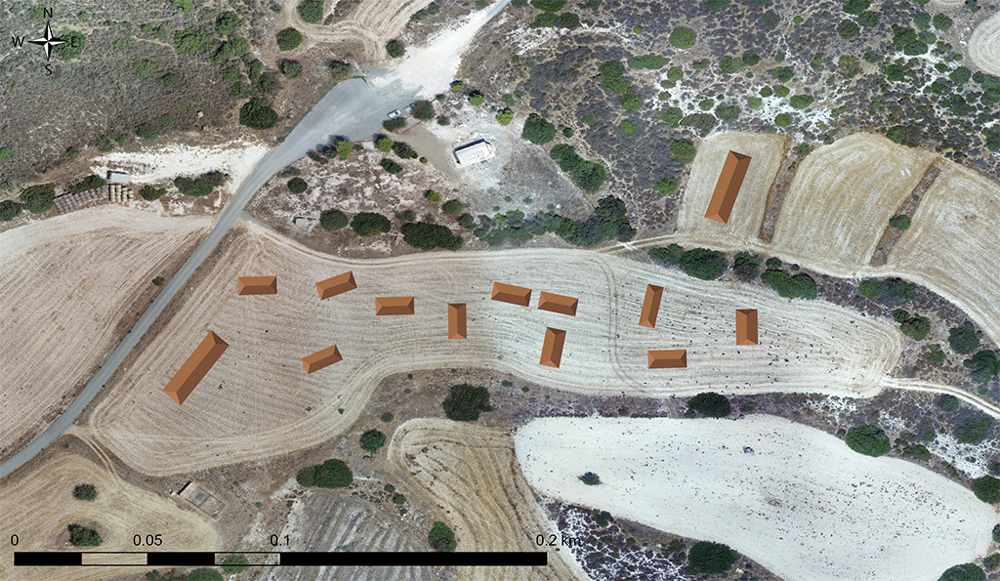

Coming out of the church and moving your head to the southwest, you can see the area occupied by
a rural settlement (1 hectare in size) in Venetian and early Ottoman times. The location of the
settlement was identified by the ‘Settled and Sacred Landscapes of Cyprus’ (SeSaLaC)
archaeological project, coordinated by the University of Cyprus. According to tradition, most of
the inhabitants of the “village of Astathkion” died as a result of a cholera pandemic (in an
unspecified period). The surviving population moved to the neighbouring village of Agios
Theodoros, where an old icon of ‘Virgin Mary of Astathion’ is kept in the church.
The concentration of surface pottery-sherds of the 15th-16th centuries in the surrounding cultivated fields (mainly southwest and southeast of the church) suggest the presence of a rural community of 70 inhabitants (15 households). As you can see on the recostruction of the settlement south of the church, the main type of rural housing of the period in Cyprus (but also in the Mediterranean and other parts of Europe) was the so-called ‘longhouse’. This is a long-surviving rural house-type that allowed all main household activities to take place within a unified space: food preparation and consuption, sleep, storage and stabling of domestic animals.
Εξερχόμενοι από τον ναό της Παναγίας και στρέφοντας το βλέμμα σας στους αγρούς που βρίσκονται
στα νοτιοδυτικά, αντικρύζετε το χώρο όπου υπήρχε αγροτικός οικισμός της Ενετοκρατίας και της
πρώιμης οθωμανικής περιόδου, έκτασης 1 εκταρίου περίπου. Η ύπαρξη του οικισμού επιβεβαιώθηκε από
το πρόγραμμα Settled and Sacred Landscapes of Cyprus (SeSaLaC) του Πανεπιστημίου Κύπρου. Σύμφωνα
με την τοπική παράδοση, οι περισσότεροι κάτοικοι του χωριού «των Ασταθκιών» απεβίωσαν (σε
άγνωστο χρόνο) εξαιτίας επιδημίας χολέρας, ενώ όσοι επέζησαν εγκαταστάθηκαν στο γειτονικό χωριό
του Αγίου Θεοδώρου, στην εκκλησία του οποίου υπάρχει η παλαιά εικόνα της «Παναγίας των
Ασταθίων».
Η μεγάλη συγκέντρωση οστράκων (θραυσμάτων κεραμικών σκευών) του 15ου-16ου αιώνα μ.Χ. στα γύρω αγροτικά τεμάχια (κυρίως στα νοτιοδυτικά και νοτιοανατολικά του ναού της Παναγίας) υποδηλώνουν την ύπαρξη μιας αγροτικής κοινότητας 70 κατοίκων περίπου (15 νοικοκυριών). Όπως φαίνεται από την αναπαράσταση του οικισμού στα νότια του ναού, ο κύριος τύπος αγροτικής κατοικίας της περιόδου (τόσο στην Κύπρο όσο και στον υπόλοιπο Μεσογειακό και Ευρωπαϊκό χώρο) ήταν το λεγόμενο «μακρυνάρι». Πρόκειται για τον μακροβιότερο τύπο αγροτόσπιτου, το οποίο διέθετε έναν ενιαίο χώρο για μια σειρά από ταυτόχρονες οικιακές δραστηριότητες: την προετοιμασία και κατανάλωση του φαγητού, τον ύπνο, την αποθήκευση και το στάβλισμα των οικόσιτων ζώων.
Kiliseden çıkıp başınızı güneybatıya doğru çevirdiğinizde Venedik ve erken Osmanlı dönemlerinde
kırsal bir yerleşimin (1 hektar büyüklüğünde) bulunduğu alanı görebilirsiniz. Yerleşimin konumu,
Kıbrıs Üniversitesi tarafından koordine ‘Settled and Sacred Landscapes of Cyprus’ (SeSaLaC)
arkeolojik projesi çerçevesinde belirlendi. Geleneğe göre, “Astathkion köyünün” sakinlerinin
çoğu kolera salgını sonucu (belirsiz bir dönemde) öldü. Hayatta kalan nüfus, kilisede eski bir
"Astathion Meryem Ana" simgesinin bulunduğu komşu köy olan Ayios Theodoros'a taşındı.
Etraftaki tarım alanlarında (çoğunlukla kilisenin güneybatı ve güneydoğusu) 15-16. yüzyıllara ait çanak çömlek parçalarının yoğunluğu, 70 kişilik (15 hane) kırsal bir topluluğun varlığına işaret etmektedir. Kilisenin güneybatısındaki yerleşimin yeniden inşasında görebileceğiniz gibi, Kıbrıs'ta (aynı zamanda Akdeniz'de ve Avrupa'nın diğer bölgelerinde) dönemin ana kırsal konut türü, "uzun ev" denilen konut türüydü. Söz konusu tür, tüm ana hane faaliyetlerinin birleşik bir alanda gerçekleşmesine izin veren, uzun süredir ayakta kalan bir kırsal ev türüdür: yiyecek hazırlama ve tüketim, uyku, depolama ve evcil hayvanların ahırları.
.